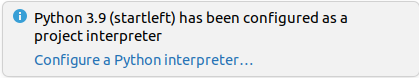

Quickstart Guide for Developers
StartLeft is an Open Source project that welcomes collaborators to extend or improve its functionality. Despite the fact that it was born as an internal IriusRisk project, there are some characteristic that makes it specially suitable to grow through the contributions of the community:
- The nature of the project, whose natural functional escalation is based on the support of new, independent, source formats.
- The conversion into OTM is based on configuration files that can also be created independently depending on the expected OTM use.
- The modularized architecture enables collaborators to contribute to each format's processor without conflicts.
How to contribute?
The IriusRisk team is currently the coordinator of the project and, ultimately, the responsible for validating the Pull Requests created by the collaborators. All you need to know before you start contributing is in the CONTRIBUTING.md file. Anyway, it is important to consider that, before creating your own fork or PR, you should check the open issues to ensure that there is none related with what you intend to do.
Set up the environment
There are no special requirements about a specific IDE or special steps to perform that make StartLeft different from any Python project. However, as PyCharm (or IntelliJ with the python plugin) is one of the most common python IDEs, some related utilities are provided.
Basic configuration
Regardless of the IDE you use, we can generalize the cloning of the project and the creation and configuration of the python virtual environment.
First, we need to clone the project and move to its project:
Then, let's create and activate a virtual environment for StartLeft:
Now, install all the required dependencies, including the ones required for setup and test, in this virtual environment:
If everything worked fine, you should be able to start the server inside this virtual environment and with no errors shown in the logs:
At this point, you have the project completely configured to start working with the IDE or editor you prefer.
PyCharm/IntelliJ setup
Open the project
The project is already cloned and configured, so simply go to File > Open... and select the
project folder.
Configure the python interpreter
As we have already configured a virtual environment, PyCharm will recognize it and propose it as the project interpreter:

We only need to click on Configure a Python interpreter... and accept the proposed one.
Import the run configurations
Since StartLeft is a quite complex project with different commands and test sets that can be launched independently, a set of portable and preconfigured run configurations are provided. So, the final configuration step is to import them following the instructions detailed here and assure that you can execute StartLeft from your PyCharm.
Architecture
With your development environment ready, it is strongly advised to take a look to the architecture page to familiarize yourself with the different modules, including their relationships and common internal structure. This is specially relevant considering that forbidden imports between modules will remain in python collect errors that prevent StartLeft to start which can lead to confusion.
Errors management
In spite of the modularized architecture of StartLeft, the process of reading and parsing an input source and
convert it into OTM has a set of fixed stages defined in the slp_base module. For each of these stages, there are
a set of predefined errors that must be used in order to get coherent and descriptive errors in the REST API or CLI
responses. All you need to know about the errors management is explained in the errors management page.
Creating a new StartLeft Processor
Once you have the environment in place and a general idea about the organization of the code, we can already take a look to the most common use cases for StartLeft contributions through the documented tutorials.
A very interesting situation is when the user wants to make StartLeft support a new format. In that case, you will need to know the interfaces you need to implement and the minimal configuration to expose it through the CLI and the REST API.
You can easily go through this creation process in this tutorial page.